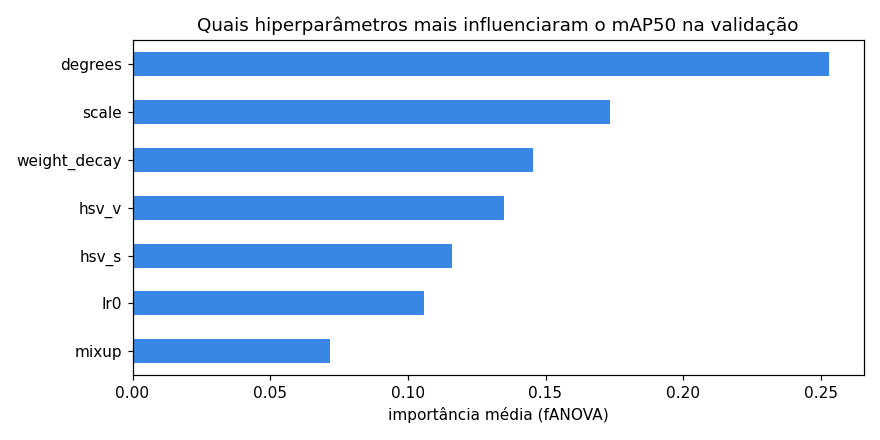

exp17 — YOLO11n com hiperparâmetros otimizados pelo Optuna
Objetivo: fazer a busca do Optuna diretamente no YOLO11n, em vez de reaproveitar os parâmetros achados com o YOLO11l. Bases: exp08 (YOLO11n, hiperparâmetros à mão; 0,485 ± 0,109) e exp16 (YOLO11n com os parâmetros do exp15; 0,509 ± 0,109).
Perguntas:
- Uma busca feita no próprio nano encontra parâmetros melhores que os herdados do YOLO11l?
- O nano é ~4× mais rápido por época. Uma busca maior (16 tentativas de 20 épocas, contra 8 de 15 no exp15) compensa?
Por que o dataset com o macrófago preto
Os dois datasets mascarados deram o mesmo resultado com o YOLO11n: preto (exp08) 0,485 e cor do fundo (exp13) 0,488. Com o preto, que é o dataset dos exp08, 09, 15 e 16, o exp17 difere do exp16 só pela busca e do exp15 só pelo modelo. Com a cor do fundo, dois fatores mudariam ao mesmo tempo.
O que é o Optuna
O Optuna é um framework de otimização automática de hiperparâmetros. Em vez de testar combinações à mão, ele faz isto:
- propõe uma combinação de hiperparâmetros (uma tentativa);
- treina o modelo com ela e mede o resultado (aqui, o mAP50 na lâmina de validação);
- usa o histórico de todas as tentativas para escolher a próxima, e repete.
- Amostrador TPE (Tree-structured Parzen Estimator): separa as tentativas em boas e ruins e sorteia as próximas onde as boas se concentram. As 3 primeiras tentativas de cada fold exploram o espaço; depois a busca se concentra nas regiões promissoras.
- Poda (MedianPruner): a cada época, uma tentativa com mAP50 abaixo da mediana das anteriores na mesma época é interrompida, para não gastar tempo com combinações ruins. As 3 primeiras tentativas e as 5 primeiras épocas de cada uma nunca são interrompidas.
- Estudo: o conjunto de tentativas de uma busca. Fica salvo num banco SQLite (
optuna/estudos.db); se a execução parar, a busca continua de onde estava.
O que muda em relação ao exp15
| exp15 | exp17 | |
|---|---|---|
| Modelo, batch | YOLO11l, 8 | YOLO11n, 16 |
| Tentativas × épocas por fold | 8 × 15 | 16 × 20 |
| Tentativas fixas no início | exp09 | exp08 e os parâmetros do exp15 para o mesmo fold |
lr0 | 1e-4 a 2e-3 | 2e-5 a 2e-3 (no exp15, 5 de 6 folds pararam em 1e-4) |
degrees | 0 a 30 | 0 a 45 (no exp15, 4 de 6 folds pararam em ~30) |
| Amostrador e poda | TPE 3 iniciais; poda após 3 tentativas e 5 épocas | TPE 5 iniciais; poda após 4 tentativas e 6 épocas |
As outras faixas são as mesmas do exp15: weight_decay 1e-5 a 1e-3 (log), hsv_s 0,2 a 0,9, hsv_v 0,2 a 0,7, scale 0,2 a 0,6, mixup 0 a 0,3. O protocolo é aninhado e sem vazamento: cada fold escolhe os parâmetros só com a sua lâmina de validação, depois treina 150 épocas (patience 40) e é avaliado nas 2 lâminas de teste.
Como as tentativas 1 e 2 são o exp08 e os parâmetros do exp15, o Optuna só troca essas configurações se achar algo melhor na validação.
| Notebook | exp17_yolo11n_optuna.ipynb |
| Dataset | 02_datasets_derivados/03_recortes_512_sem_macrofago/ |
| Saídas da busca | optuna/estudos.db, optuna/melhores_parametros.json, figuras/importancia_hiperparametros.png |
| Status | concluído em 18 nov. 2026 (14h55–16h08, 1h13: busca + treino final) |
Exemplos das imagens de entrada

Resultado
| Hiperparâmetros | Precisão | Recall | mAP50 | mAP50-95 | Tempo | |
|---|---|---|---|---|---|---|
| exp17 | busca do Optuna no YOLO11n | 0,510 ± 0,132 | 0,565 ± 0,085 | 0,495 ± 0,144 | 0,190 ± 0,056 | 1h13 |
| exp16 | herdados do exp15 (YOLO11l) | 0,525 ± 0,110 | 0,566 ± 0,055 | 0,509 ± 0,109 | 0,196 ± 0,039 | 20 min |
| exp08 | à mão | 0,508 ± 0,102 | 0,547 ± 0,074 | 0,485 ± 0,109 | 0,184 ± 0,039 | ~20 min |
Conclusões:
- Respostas às duas perguntas: não. A busca feita no próprio nano não superou os parâmetros herdados do YOLO11l (0,495 contra 0,509 do exp16), e a busca maior não compensou. Contra o exp08, o ganho foi de +0,010, dentro do ruído.
- A validação melhorou, o teste não. Em todos os 6 folds, a busca achou uma configuração melhor na lâmina de validação do que as duas tentativas fixas (exp08 e exp15). No teste, porém, só o fold 5 melhorou em relação ao exp16. A busca está se ajustando às particularidades da única lâmina de validação de cada fold.
- O pior caso é o fold 6 (validação leish_1, teste leish_2 e leish_8): 0,289 contra 0,403 no exp16. A busca escolheu lr0 alto (1,1e-3) e quase sem rotação, e a melhor época foi a 13. A leish_1 (fundo acinzentado) não representa as lâminas de teste.
- Sem os padrões do exp15. No exp15, os folds concordavam (lr0 ~1e-4, rotação ~30°). Aqui as escolhas se espalharam: lr0 de 1,2e-4 a 1,4e-3, e rotação abaixo de 9° em 5 folds. Com a faixa ampliada, o lr0 deixou de ficar no limite.
- Consequência: com uma lâmina de validação por fold, a busca de hiperparâmetros tem pouco sinal a explorar. O ganho do exp16 sobre o exp08 (+0,024) também pode ser em parte sorte. Para buscas futuras, valeria validar em mais de uma lâmina (por exemplo, validação cruzada interna nas 5 lâminas de treino), o que multiplica o custo. Este resultado reforça a decisão de investir no pré-processamento.
Busca por fold
| Fold | Validação | Podadas | Val. exp08 | Val. parâm. exp15 | Val. melhor | Épocas (melhor) | Teste exp17 | exp16 | exp08 |
|---|---|---|---|---|---|---|---|---|---|
| 1 | leish_4 | 7 de 16 | 0,208 | 0,232 | 0,251 | 110 (83) | 0,568 | 0,569 | 0,534 |
| 2 | leish_8 | 9 de 16 | 0,340 | 0,351 | 0,385 | 62 (56) | 0,610 | 0,641 | 0,574 |
| 3 | leish_9 | 5 de 16 | 0,590 | 0,589 | 0,634 | 115 (57) | 0,374 | 0,372 | 0,354 |
| 4 | leish_7 | 8 de 16 | 0,643 | 0,668 | 0,682 | 78 (48) | 0,469 | 0,472 | 0,476 |
| 5 | leish_2 | 7 de 16 | 0,401 | 0,413 | 0,449 | 61 (21) | 0,658 | 0,596 | 0,612 |
| 6 | leish_1 | 8 de 16 | 0,551 | 0,561 | 0,592 | 53 (13) | 0,289 | 0,403 | 0,360 |
"Val." = mAP50 na lâmina de validação durante a busca (20 épocas). A poda interrompeu 44 das 96 tentativas.
O que o Optuna escolheu
| Fold | lr0 | weight_decay | hsv_s | hsv_v | degrees | scale | mixup |
|---|---|---|---|---|---|---|---|
| 1 | 4,1e-4 | 3,3e-4 | 0,56 | 0,35 | 8,5 | 0,38 | 0,17 |
| 2 | 3,3e-4 | 4,0e-5 | 0,67 | 0,50 | 0,7 | 0,21 | 0,08 |
| 3 | 1,2e-4 | 4,7e-4 | 0,44 | 0,38 | 6,8 | 0,29 | 0,26 |
| 4 | 8,6e-4 | 1,2e-4 | 0,28 | 0,51 | 28,1 | 0,31 | 0,23 |
| 5 | 1,4e-3 | 1,5e-4 | 0,47 | 0,20 | 0,5 | 0,20 | 0,00 |
| 6 | 1,1e-3 | 2,9e-4 | 0,75 | 0,33 | 2,4 | 0,28 | 0,30 |
| exp08 | 5,0e-4 | 5,0e-4 | 0,90 | 0,60 | 15 | 0,50 | 0,10 |
O único padrão comum aos dois experimentos com Optuna é scale menor que o do exp08 (0,20–0,38 contra 0,50) e hsv_s menor que 0,9.

Por lâmina (mAP50 no teste)
| Lâmina | exp17 | exp16 | exp08 |
|---|---|---|---|
| leish_1 | 0,574 | 0,545 | 0,525 |
| leish_2 | 0,348 | 0,392 | 0,399 |
| leish_3 | 0,283 | 0,392 | 0,359 |
| leish_4 | 0,198 | 0,187 | 0,184 |
| leish_5 | 0,571 | 0,572 | 0,536 |
| leish_7 | 0,694 | 0,688 | 0,672 |
| leish_8 | 0,312 | 0,390 | 0,359 |
| leish_9 | 0,560 | 0,535 | 0,590 |
A leish_1 teve o maior valor da série (0,574). A leish_8 e a leish_2 caíram, ambas no fold 6.